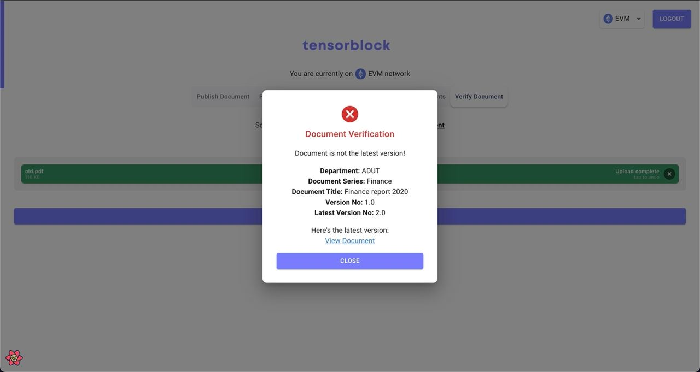
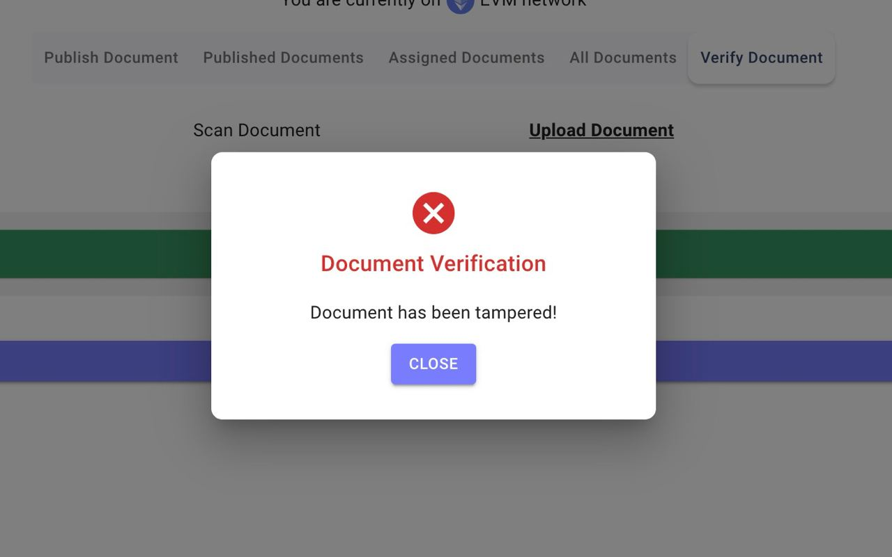

Project



Project description
Tensorblock's Document Notarisation Application (DNA) is a blockchain-based solution for efficient and secure document management, particularly in the engineering and construction industries. DNA offers real-time tracking, version control, and anti-tampering measures, leveraging blockchain technology to offer an immutable record of documents.
My team and I developed DNA for our final year project in SMU. At the end of the project, I realised that there might be an actual use case for our product in the real world and so I set out to create pitch decks and further refined our project for demonstration purposes. Using this project, we managed to reach the last stage of SMU's BIG Incubator selection process.
In addition, our team participated in the Lee Kuan Yew Global Business Plan Competition and was selected for the Supercomputing Resource Basic Package Prize awarded by the National Supercomputing Centre (NSCC). Despite winning the prize, we decided to turn down the package as my team and I found that our project did not require supercomputing services and that the prize would be much better utilised by another team who truly requires supercomputing for their project.